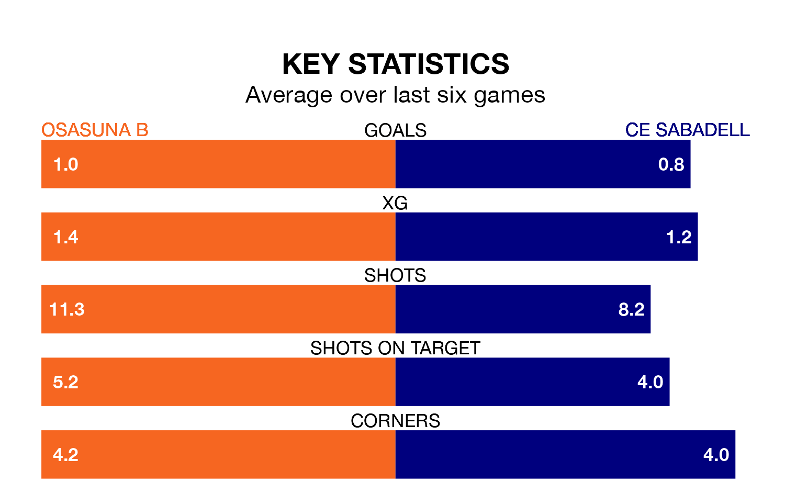

Osasuna B host CE Sabadell on Sunday at Instalaciones Deportivas de Tajonar in Primera Division RFEF Group 1.
In their last league match, on March 31, Osasuna B lost to Barcelona B 3-2 at home, with their goal scored by Max Svensson Río (two).
CE Sabadell won, 2-1 away at CF Fuenlabrada on March 30, with Vladyslav Koptoun (two) scoring their goals.
In Ander Yoldi Aizagar, Osasuna B have one of the league's most on-form strikers so far this season. He has notched eight goals in 24 appearances, to sit second in the scoring charts.
CE Sabadell's top scorers, with four goals each, are José Manuel Martínez Bel and Antonio Moyano Carrasquilla.
With 35 goals in 30 games so far this season, the home team are scoring more than average in the league with 1.2 goals per game. But they are conceding more than average too, letting in 40 goals at a rate of 1.3 per game.
The visitors, meanwhile, are below average scorers, with 1.0 goal per game, compared to a league average of 1.1. They have conceded 1.4 goals per game.
CE Sabadell are 16th in the table after 30 games, of which they have won nine and drawn six, earning 33 points.
Osasuna B are three places ahead of CE Sabadell in 13th, with eight wins and 10 draws putting them on 34 points.
Osasuna B are in disappointing form in Primera Division RFEF Group 1, with one win and two draws from their last six games.
With two wins and two draws over that period, the away side's form is better – they have taken eight points from 18, compared to the hosts' five.
In the last three years, Osasuna B and CE Sabadell have played each other on three occasions. They won one each, and they drew once.
Their last meeting was on September 3, when CE Sabadell won 2-1 at home.
Updated: 16:41 (UTC), 04/04/24